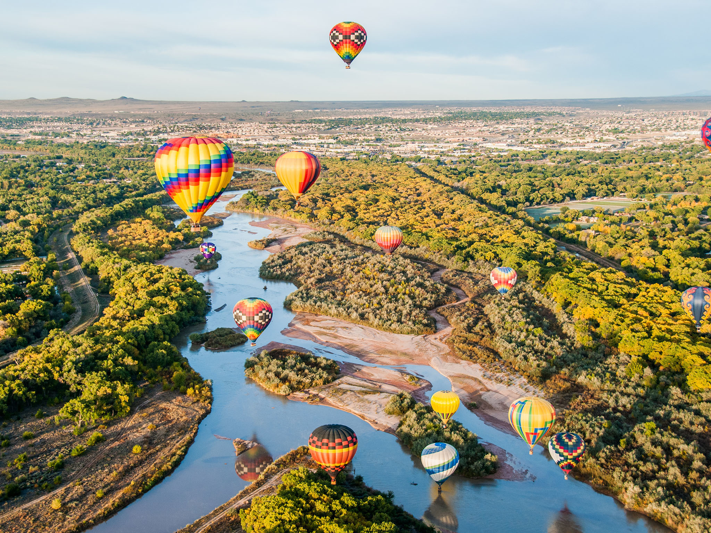
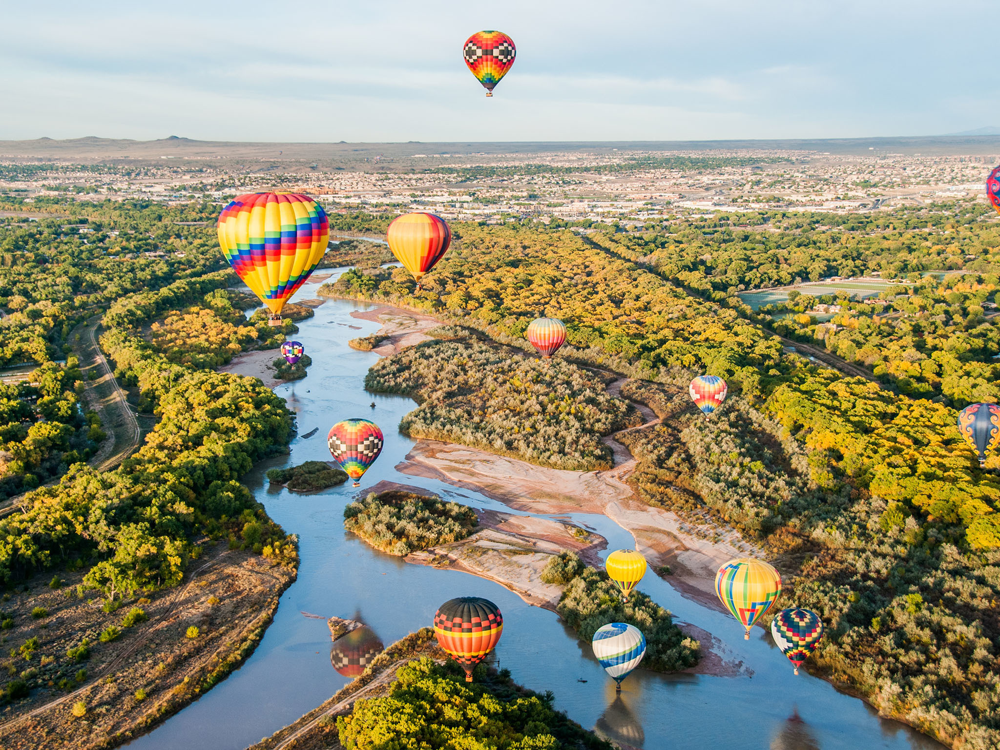

New Mexico is a state in the Southwestern region of the United States. It is one of the Mountain States of the southern Rocky Mountains, sharing the Four Corners region with Utah, Colorado, and Arizona. It also borders Texas to the east and southeast, Oklahoma to the northeast, and the Mexican states of Chihuahua and Sonora to the south. New Mexico's largest city is Albuquerque, and its state capital is Santa Fe, the oldest state capital in the U.S., founded in 1610 as the government seat of Nuevo México in New Spain.
New Mexico received its name long before the present-day nation of Mexico won independence from Spain and adopted that name in 1821. The name "Mexico" derives from Nahuatl and originally referred to the heartland of the Mexica, the rulers of the Aztec Empire, in the Valley of Mexico. Mexican history placed their people's origin in Aztlán, a place to the north from which they migrated to Mexico. This account and reports by Spanish explorers of the trade network of the Pueblos and others eventually evolved into the folklore of the Seven Cities of Gold. The 1609 Nahuatl-language Crónica Mexicayotl made the identification of New Mexico and Aztlán explicit, describing how the Mexica people left "their home there in Old Mexico Aztlan Quinehuayan Chicomoztoc, which today they call New Mexico (yancuic mexico).
The first known inhabitants of New Mexico were members of the Clovis culture of Paleo-Indians.[34]: 19 Footprints discovered in 2017 suggest that humans may have been present in the region as long ago as 21,000–23,000 BC.[35] Later inhabitants include the Mogollon and Ancestral Pueblo cultures, which are characterized by sophisticated pottery work and urban development;[36]: 52 pueblos or their remnants, like those at Acoma, Taos, and Chaco Culture National Historical Park, indicate the scale of Ancestral Puebloan dwellings within the area. These cultures form part of the broader Oasisamerica region of pre-Columbian North America.
 
